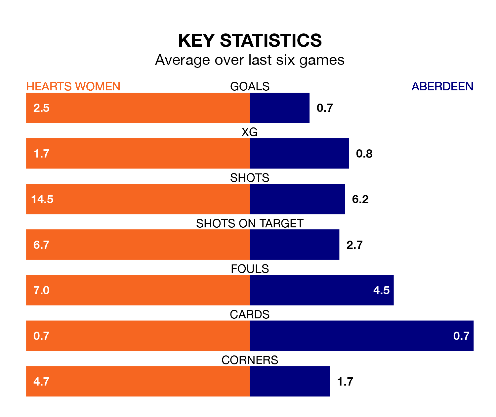

Aberdeen come to Oriam National Performance Centre to play Hearts Women on Sunday in poor form, having collected just four points from their last six games.
The visitors have won one and drawn one of their last six fixtures, while Hearts have four wins and a draw.
In the last 10 years, Hearts and Aberdeen have played each other on six occasions. Hearts won five of them and Aberdeen one.
On average, Hearts scored 1.7 goals and Aberdeen 1.0 in those matches.
Their last meeting was on August 27, when Hearts won 2-0 away.
With 29 goals in 19 games so far this season, Aberdeen are scoring at below the league average rate with 1.5 goals per game. And they are conceding more than average, letting in 57 goals at a rate of 3.0 per game.
Hearts, meanwhile, are above average scorers, with 2.4 goals per game, compared to a league average of 2.2. They have conceded 1.2 goals per game.
In Katie Jayne Lockwood, the hosts have one of the league's sharpest shooters so far this season. She has notched 14 goals in 16 appearances, to sit fourth in the scoring charts.
The away side's top scorer, with 14 goals in 19 games, is Bayley Hutchison.
Hearts are sixth in the table after 19 games, of which they have won 10 and drawn three, earning 33 points.
Aberdeen are one place behind Hearts in seventh, with seven wins and one draw putting them on 22 points.
Hearts's last match was on Wednesday, a 1-0 loss against Rangers Women.
Aberdeen beat Montrose Women 2-1 last time out, also on Wednesday, with Eilidh Shore and Francesca Ogilvie on the scoresheet.
Updated: 11:18 (UTC), 08/02/24